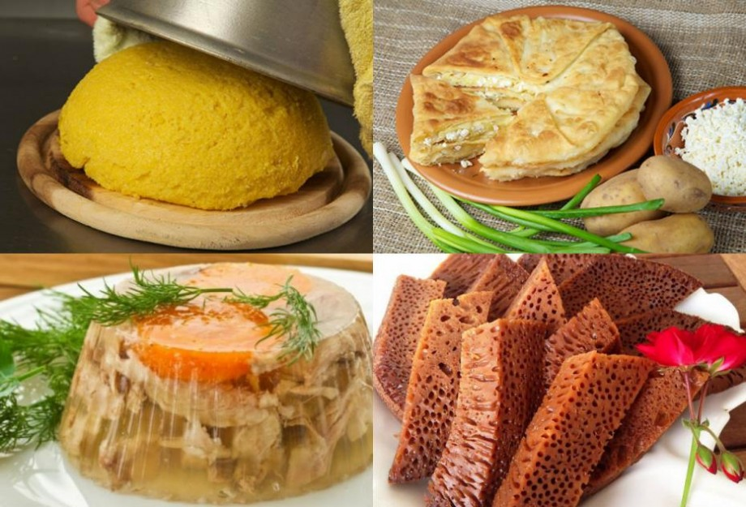

Cine nu cunoaste Moldova pentru superbele sale mănăstiri și peisaje pitorești, o cunoaște cu siguranță pentru mâncarea excelentă și consistentă. Gustul de mămăligă, sarmale sau plăcinte rămân mereu în memoria turiștilor care ne vizitează țara. Așadar, fie că ne vin în vizită partenerii de afaceri sau prietenii de peste hotare, mâncarea tradițională „ca la mama acasă” trebuie să fie de nelipsit pe masă. In familia mea , la toate mesele de sărbătoare poți găsi anume plăcintele și sarmalele, pe care mama te gătește cu multă dragoste

Bucătăria moldovenească este denumirea sub care este cunoscută de străini totalitatea tradițiilor, obiceiurilor și gusturilor gastronomice din Republica Moldova. Ad litteram, ca sens primar, sintagma „bucătăria moldovenească” ar putea defini și ansamblul de tradiții culinare din spațiul regiunii geografico-istorice Moldova. Totuși, acestea nu sunt individualizate și diferențiate suficient de mult față de bucătăria românească per ansamblu.